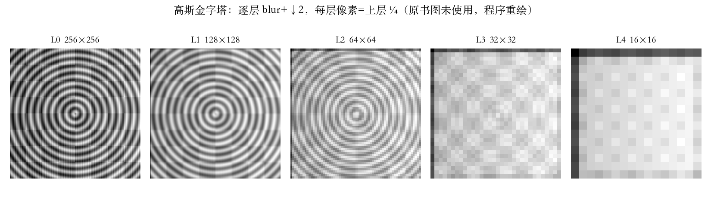
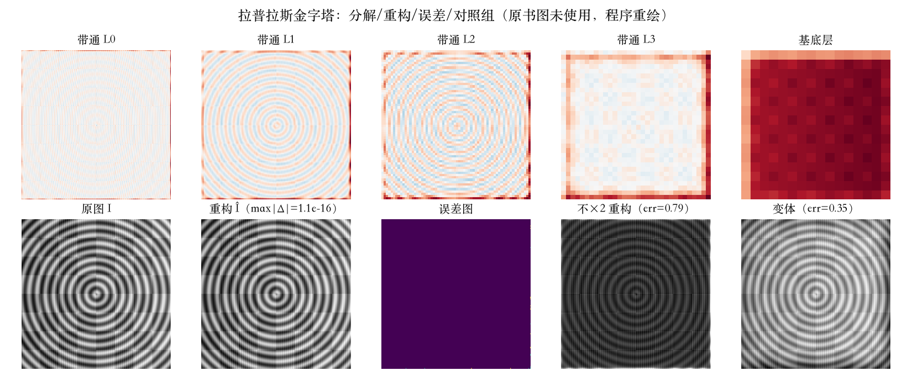
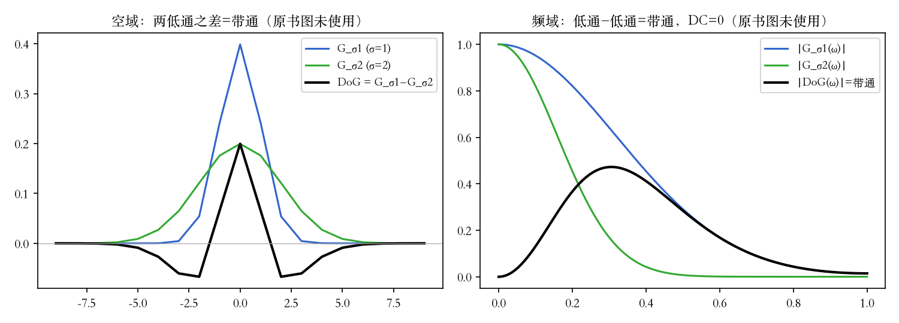
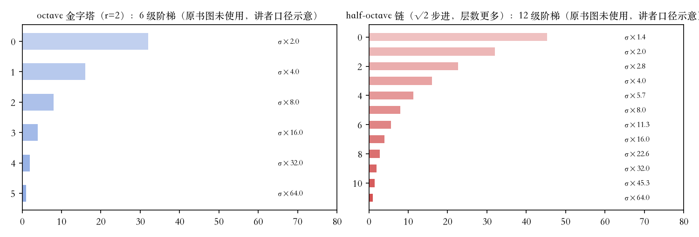

第 3 章 · 多分辨率
金字塔用来做什么
- 由粗到细搜索，在不同尺度找目标或图案。
- 做多分辨率的图像融合。
- 图形软硬件用 MIP-map 做分数级缩小。
- 最出名的是 Burt 与 Adelson 1983 年的拉普拉斯金字塔。
依据：原书第 154–155 页
搭塔
先模糊，再隔二取样
- 先低通模糊，再隔二取样，存进上一层。
- 相邻层采样率差一倍，叫倍频程金字塔。
- 每层宽高减半，像素数只剩四分之一。
- 五抽头核取 a=3/8，得 [1,4,6,4,1]/16；五层 256→16。
依据：原书第 155–156 页；本集实验

五层高斯金字塔，逐层模糊＋隔二取样，像素逐层四分之一｜程序生成，未用教材或论文原图
拆塔与重构
插值回来，本层减掉
- 拉普拉斯图 = 本层 − 上采样后的低层。
- 剩下的是带通图，只保留中等粗细的细节。
- 全部带通图加顶层低通图，能完全重构原图。
- 重构系数是分析系数的两倍：误差 1.11e−16，不乘二 0.793，变体 0.353。
依据：原书第 156–158 页；本集实验

五层带通图、重构、误差与不乘二对照｜程序生成，未用教材或论文原图
名不副实
两低通之差，就是带通
- 塔里的“拉普拉斯”其实是近似高斯之差。
- 式 3.70：Gσ1∗I − Gσ2∗I = (Gσ1−Gσ2)∗I。
- 真 LoG 是二阶导：∇²(Gσ∗I) = (∇²Gσ)∗I。
- 直流处归零；剖面 |cc|=0.9184，反相是符号约定。
依据：原书第 158 页；本集实验

DoG 空域与频域剖面：两低通之差成带通｜程序生成，未用教材或论文原图
更细的尺度阶梯
半倍频程与像素账
- 半倍频程又叫低通之差变换（DOLP），常配梅花采样。
- 覆盖 64 倍尺度：整倍频程 6 级，半倍频程 12 级。
- 小波金字塔每层存 3/4 像素，总数与原图相同。
- 整倍频程塔的账是 4/3，比原图多三分之一。
依据：原书第 159 页；本集实验

整倍频程 6 级与半倍频程 12 级的层数示意；原书未给梅花采样滤波器组系数｜程序生成，未用教材或论文原图
小结 · 下一集
塔已搭好，下一站小波
- 搭塔：先模糊、再隔二取样，像素逐层四分之一。
- 拆塔：插值回来再减，重构端系数乘二。
- 认清：塔里的拉普拉斯是高斯之差；变体不自逆。
- 下一集：小波与图像融合。
依据：原书第 155–159 页
三步
搭塔：模糊 + 隔二
拆塔：插值 + 相减
认清：DoG 与 LoG 同族